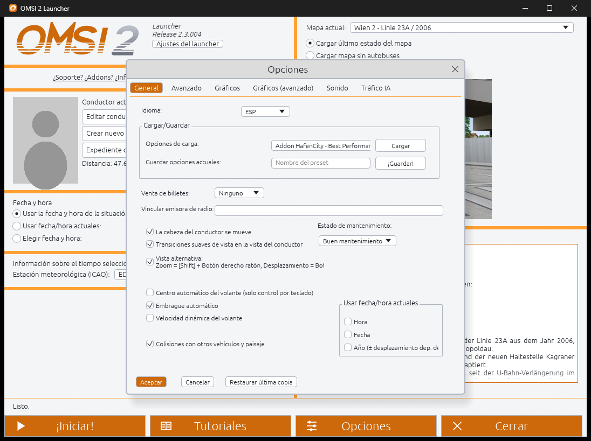
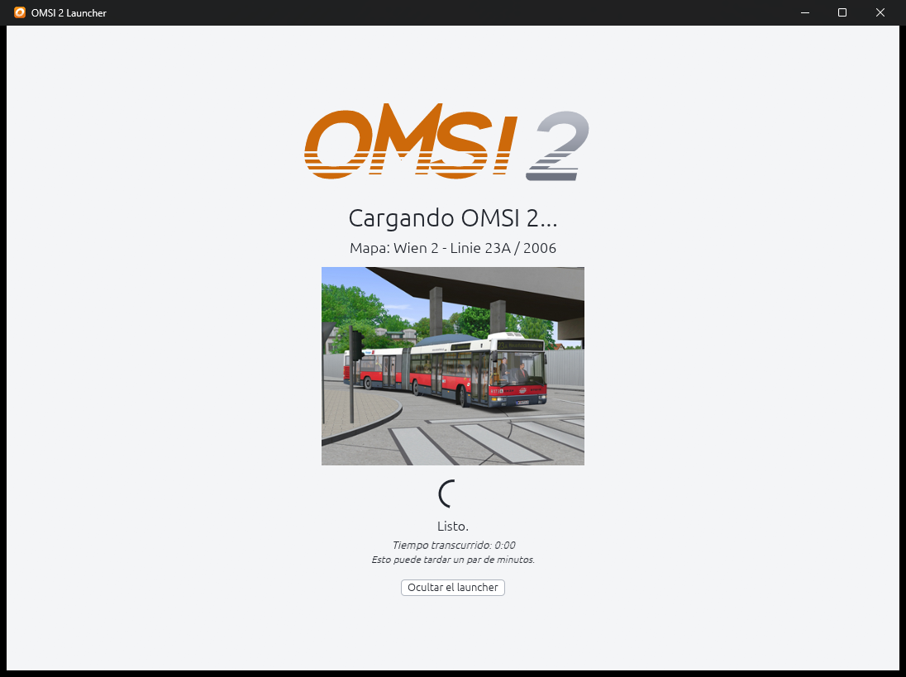
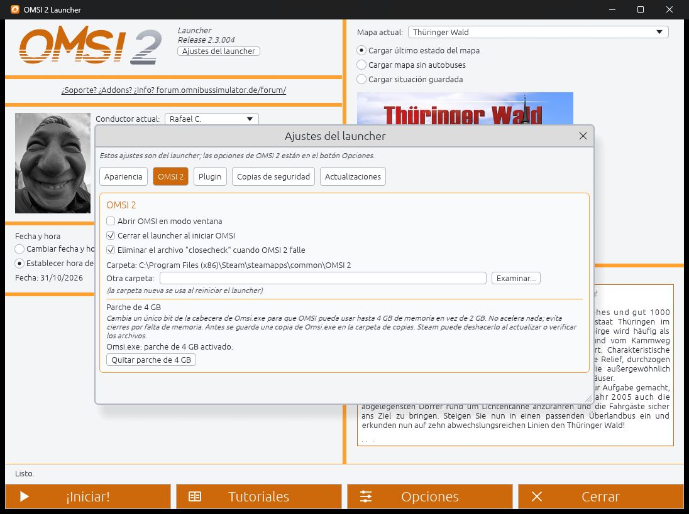
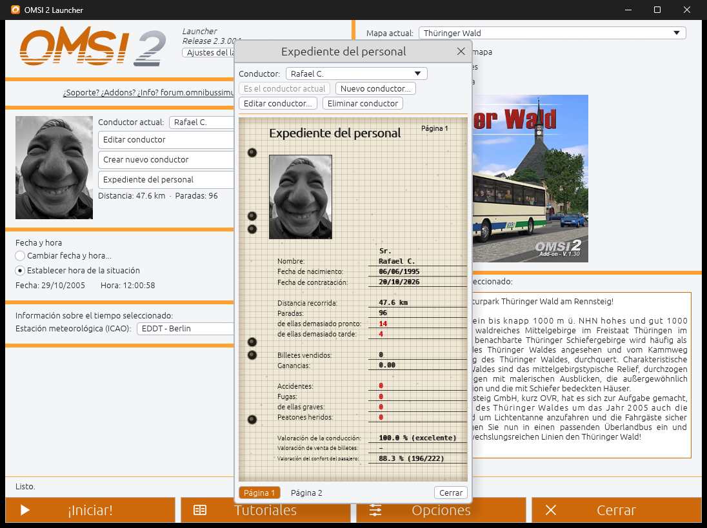
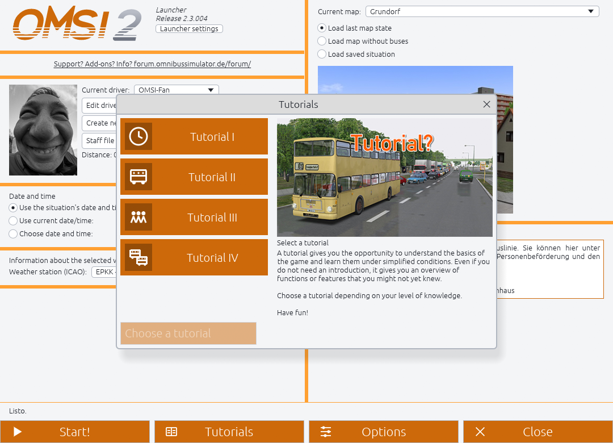

What it doesQué hace
Everything the OMSI 2 start screen does, without clicking through it every time, and a few things it does not. Todo lo que hace la pantalla de inicio de OMSI 2, sin tener que pasar por ella cada vez, y alguna cosa que no hace.
One-click startInicio con un clic
Open OMSI 2 Launcher, pick your map and driver, and it starts OMSI 2 and loads the last map state, the map without buses, or a saved situation.Abre OMSI 2 Launcher, elige tu mapa y conductor y carga el último estado, el mapa sin autobuses o una situación guardada.
Date, time and weatherFecha, hora y tiempo
Like OMSI's start screen: change them in a window with the four times of day, the weekday and the map's holidays, or keep the situation's.Como la pantalla de inicio de OMSI: cámbialas en una ventana con las cuatro franjas del día, el día de la semana y los festivos del mapa, o deja las de la situación.
OMSI's options, rebuiltLas opciones de OMSI, reconstruidas
The same tabs and layout as the original, plus option presets you can load and save.Las mismas pestañas y disposición que el original, más presets de opciones que puedes cargar y guardar.
Drivers and staff fileConductores y expediente
Edit, create and delete drivers and read their stops, distance, comfort rating and buses.Edita, crea y elimina conductores y consulta paradas, distancia, valoración de confort y autobuses.
Choose where to appearElige dónde aparecer
With "Load map without buses", pick the map's start place in the launcher; it answers OMSI's position window for you.Con "Cargar mapa sin autobuses", elige en el launcher el punto de inicio del mapa; él responde a la ventana de posición de OMSI.
TutorialsTutoriales
Start tutorials 1 to 4 straight from the launcher.Inicia los tutoriales 1 a 4 directamente desde el launcher.
Your languages, 5 themesTus idiomas, 5 temas
Nine built in (Español, English, Deutsch, Polski, Čeština, Français, Português, Magyar, Srpski) plus any other language, with your own translation file; original orange, Modern OMSI, dark, light and blue themes.Nueve incluidos (Español, English, Deutsch, Polski, Čeština, Français, Português, Magyar, Srpski) más cualquier otro idioma, con tu propio archivo de traducción; temas naranja original, Modern OMSI, oscuro, claro y azul.
A lookUn vistazo
Full screen like OMSI's own start screen, with a loading screen that stays up until the map is loading.A pantalla completa como la propia pantalla de inicio de OMSI, con una pantalla de carga que se mantiene hasta que el mapa se está cargando.





It never touches your OMSI filesNo toca tus archivos de OMSI
The original OMSI 2 files are never modified. This is everything the launcher writes, and nothing is written while OMSI is running.Los archivos originales de OMSI 2 nunca se modifican. Esto es todo lo que escribe el launcher, y no escribe nada mientras OMSI está en ejecución.
| WhatQué | WhereDónde | SafetySeguridad |
|---|---|---|
options.cfg | OMSI foldercarpeta de OMSI | Only when you press Accept in Options; backed up firstSolo al pulsar Aceptar en Opciones; antes se hace copia de seguridad |
Drivers\*.odr | OMSI foldercarpeta de OMSI | Only when you edit, create or delete a driver; backed up firstSolo al editar, crear o eliminar un conductor; antes se hace copia de seguridad |
| New preset filesPresets nuevos | option_presets\ | New files only; existing presets are never overwrittenSolo archivos nuevos; nunca sobrescribe presets existentes |
| Two plugin filesDos archivos del plugin | plugins\ | Only when you press Install plugin; removable from the same placeSolo al pulsar Instalar plugin; se quitan desde el mismo sitio |
Omsi.exe | OMSI foldercarpeta de OMSI | Only the optional 4 GB patch (one header bit), when you press its button; backed up first and removableSolo el parche opcional de 4 GB (un bit de la cabecera), al pulsar su botón; antes se hace copia de seguridad y se puede quitar |
| Settings, log, backupsAjustes, registro, copias | %APPDATA%\OMSI2-Launcher\ | The 3 newest backups of each file are keptSe conservan las 3 copias más recientes de cada archivo |
InstallInstalar
Windows 10/11, 64-bit, with OMSI 2 version 2.3.004.Windows 10/11 de 64 bits, con OMSI 2 versión 2.3.004.
- Download the
.zipfrom the releases page and unzip it anywhere.Descarga el.zipde la página de versiones y descomprímelo donde quieras. - Run
OMSI2-Launcher.exe. It finds OMSI 2 by itself, or asks where it is.EjecutaOMSI2-Launcher.exe. Encuentra OMSI 2 solo, o te pregunta dónde está. - Open Launcher settings and press Install plugin (needed to start OMSI from the launcher in this version).Abre Ajustes del launcher y pulsa Instalar plugin (necesario para iniciar OMSI desde el launcher en esta versión).
- Choose your map and driver, then press Start.Elige mapa y conductor y pulsa Iniciar.
The program is not code-signed, so Windows SmartScreen or your antivirus may warn about it the first time. It is a new, unknown file, not a detected threat, and the source is open for you to read and build.El programa no está firmado digitalmente, así que SmartScreen o tu antivirus pueden avisar la primera vez. Es un archivo nuevo y desconocido, no una amenaza detectada, y el código es abierto para que lo leas y compiles.
Good to knowConviene saber
- The Keyboard and Controller tabs of the options window are not implemented yet.Las pestañas Teclado y Controlador de las opciones aún no están implementadas.
- The plugin only recognises OMSI 2 2.3.004.El plugin solo reconoce OMSI 2 2.3.004.
- Polish and Czech translations are waiting for review by native speakers.Las traducciones al polaco y al checo esperan revisión de hablantes nativos.
- Found a bug? Open an issue with your
launcher.log.¿Un fallo? Abre una incidencia con tulauncher.log.